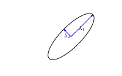
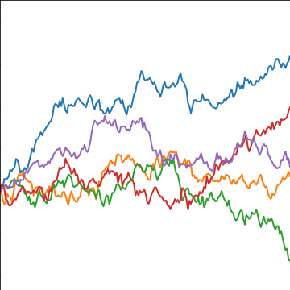

Figure: Introduction to Gaussian processes given by Neil Lawrence at the 2014 Gaussian process Winter School at the University of Sheffield.
[edit]
The covariance function encapsulates our assumptions about the data. The equations for the distribution of the prediction function, given the training observations, are highly sensitive to the covariation between the test locations and the training locations as expressed by the matrix $\kernelMatrix_*$. We defined a matrix A which allowed us to express our conditional mean in the form,
$$
\meanVector_\mappingFunction = \mathbf{A}^\top \dataVector,
$$
where $\dataVector$ were our training observations. In other words our mean predictions are always a linear weighted combination of our training data. The weights are given by computing the covariation between the training and the test data ($\kernelMatrix_*$) and scaling it by the inverse covariance of the training data observations, $\left[\kernelMatrix + \dataStd^2 \eye\right]^{-1}$. This inverse is the main computational object that needs to be resolved for a Gaussian process. It has a computational burden which is $O(\numData^3)$ and a storage burden which is $O(\numData^2)$. This makes working with Gaussian processes computationally intensive for the situation where $\numData>10,000$.
Figure: Introduction to Gaussian processes given by Neil Lawrence at the 2014 Gaussian process Winter School at the University of Sheffield.
[edit]
In practice we shouldn’t be using matrix inverse directly to solve the GP system. One more stable way is to compute the Cholesky decomposition of the kernel matrix. The log determinant of the covariance can also be derived from the Cholesky decomposition.
Gaussian processes are sometimes seen as part of a wider family of methods known as kernel methods. Kernel methods are also based around covariance functions, but in the field they are known as Mercer kernels. Mercer kernels have interpretations as inner products in potentially infinite dimensional Hilbert spaces. This interpretation arises because, if we take α = 1, then the kernel can be expressed as
$$
\kernelMatrix = \basisMatrix\basisMatrix^\top
$$
which imples the elements of the kernel are given by,
$$
\kernelScalar(\inputVector, \inputVector^\prime) = \basisVector(\inputVector)^\top \basisVector(\inputVector^\prime).
$$
So we see that the kernel function is developed from an inner product between the basis functions. Mercer’s theorem tells us that any valid positive definite function can be expressed as this inner product but with the caveat that the inner product could be infinite length. This idea has been used quite widely to kernelize algorithms that depend on inner products. The kernel functions are equivalent to covariance functions and they are parameterized accordingly. In the kernel modeling community it is generally accepted that kernel parameter estimation is a difficult problem and the normal solution is to cross validate to obtain parameters. This can cause difficulties when a large number of kernel parameters need to be estimated. In Gaussian process modelling kernel parameter estimation (in the simplest case proceeds) by maximum likelihood. This involves taking gradients of the likelihood with respect to the parameters of the covariance function.
The easiest conceptual way to obtain the gradients is a two step process. The first step involves taking the gradient of the likelihood with respect to the covariance function, the second step involves considering the gradient of the covariance function with respect to its parameters.
In general we won’t be able to find parameters of the covariance function through fixed point equations, we will need to do gradient based optimization.
The objective function can be decomposed into two terms, a capacity control term, and a data fit term. The capacity control term is the log determinant of the covariance. The data fit term is the matrix inner product between the data and the inverse covariance.
[edit]
Can we determine covariance parameters from the data?
$$
\gaussianDist{\dataVector}{\mathbf{0}}{\kernelMatrix}=\frac{1}{(2\pi)^\frac{\numData}{2}{\det{\kernelMatrix}^{\frac{1}{2}}}}{\exp\left(-\frac{\dataVector^{\top}\kernelMatrix^{-1}\dataVector}{2}\right)}
$$
$$
\begin{aligned}
\gaussianDist{\dataVector}{\mathbf{0}}{\kernelMatrix}=\frac{1}{(2\pi)^\frac{\numData}{2}\color{blue}{\det{\kernelMatrix}^{\frac{1}{2}}}}\color{red}{\exp\left(-\frac{\dataVector^{\top}\kernelMatrix^{-1}\dataVector}{2}\right)}
\end{aligned}
$$
$$
\begin{aligned}
\log \gaussianDist{\dataVector}{\mathbf{0}}{\kernelMatrix}=&\color{blue}{-\frac{1}{2}\log\det{\kernelMatrix}}\color{red}{-\frac{\dataVector^{\top}\kernelMatrix^{-1}\dataVector}{2}} \\ &-\frac{\numData}{2}\log2\pi
\end{aligned}
$$
$$
\errorFunction(\parameterVector) = \color{blue}{\frac{1}{2}\log\det{\kernelMatrix}} + \color{red}{\frac{\dataVector^{\top}\kernelMatrix^{-1}\dataVector}{2}}
$$
[edit]
The parameters are inside the covariance function (matrix).
$$\kernelScalar_{i, j} = \kernelScalar(\inputVals_i, \inputVals_j; \parameterVector)$$
$$\kernelMatrix = \rotationMatrix \eigenvalueMatrix^2 \rotationMatrix^\top$$
|

|
$\eigenvalueMatrix$ represents distance on axes. $\rotationMatrix$ gives rotation. |
Figure: The determinant of the covariance is dependent only on the eigenvalues. It represents the ‘footprint’ of the Gaussian.
Figure: The data fit term of the Gaussian process is a quadratic loss centered around zero. This has eliptical contours, the principal axes of which are given by the covariance matrix.
[edit]
[edit]
Figure: Variation in the data fit term, the capacity term and the negative log likelihood for different lengthscales.
[edit]
The exponentiated quadratic covariance, also known as the Gaussian covariance or the RBF covariance and the squared exponential. Covariance between two points is related to the negative exponential of the squared distnace between those points. This covariance function can be derived in a few different ways: as the infinite limit of a radial basis function neural network, as diffusion in the heat equation, as a Gaussian filter in Fourier space or as the composition as a series of linear filters applied to a base function.
The covariance takes the following form,
$$
\kernelScalar(\inputVector, \inputVector^\prime) = \alpha \exp\left(-\frac{\ltwoNorm{\inputVector-\inputVector^\prime}^2}{2\lengthScale^2}\right)
$$
where ℓ is the length scale or time scale of the process and α represents the overall process variance.

|
Figure: The exponentiated quadratic covariance function.
[edit]
Brownian motion is also a Gaussian process. It follows a Gaussian random walk, with diffusion occuring at each time point driven by a Gaussian input. This implies it is both Markov and Gaussian. The covariance function for Brownian motion has the form
$$
\kernelScalar(t, t^\prime)=\alpha \min(t, t^\prime)
$$
|

|
Figure: Brownian motion covariance function.
[edit]

|
Figure: Polynomial covariance function.
[edit]

|
Figure: Periodic covariance function.
[edit]
Another approach to developing covariance function exploits Bochner’s theorem Bochner (1959). Bochner’s theorem tells us that any positve filter in Fourier space implies has an associated Gaussian process with a stationary covariance function. The covariance function is the inverse Fourier transform of the filter applied in Fourier space.
For example, in signal processing, band limitations are commonly applied as an assumption. For example, we may believe that no frequency above w = 2 exists in the signal. This is equivalent to a rectangle function being applied as a the filter in Fourier space.
The inverse Fourier transform of the rectangle function is the sinc( ⋅ ) function. So the sinc is a valid covariance function, and it represents band limited signals.
Note that other covariance functions we’ve introduced can also be interpreted in this way. For example, the exponentiated quadratic covariance function can be Fourier transformed to see what the implied filter in Fourier space is. The Fourier transform of the exponentiated quadratic is an exponentiated quadratic, so the standard EQ-covariance implies a EQ filter in Fourier space.
[edit]
The multi-layer perceptron (MLP) covariance, also known as the neural network covariance or the arcsin covariance, is derived by considering the infinite limit of a neural network.

|
Figure: The multi-layer perceptron covariance function. This is derived by considering the infinite limit of a neural network with probit activation functions.
[edit]

|
Figure: Rectified linear unit covariance function.
Markov Process
Visualization of inverse covariance (precision).
Precision matrix is sparse: only neighbours in matrix are non-zero.
This reflects conditional independencies in data.
In this case Markov structure.
Exponentiated Quadratic
Visualization of inverse covariance (precision).
|
rbfprecisionSample |
Markov Process
Visualization of inverse covariance (precision).
|
markovprecisionPlot |
For more information on these subjects and more you might want to check the following resources.
Bochner, Salomon. 1959. Lectures on Fourier Integrals. Princeton University Press. http://books.google.co.uk/books?id=-vU02QewWK8C.